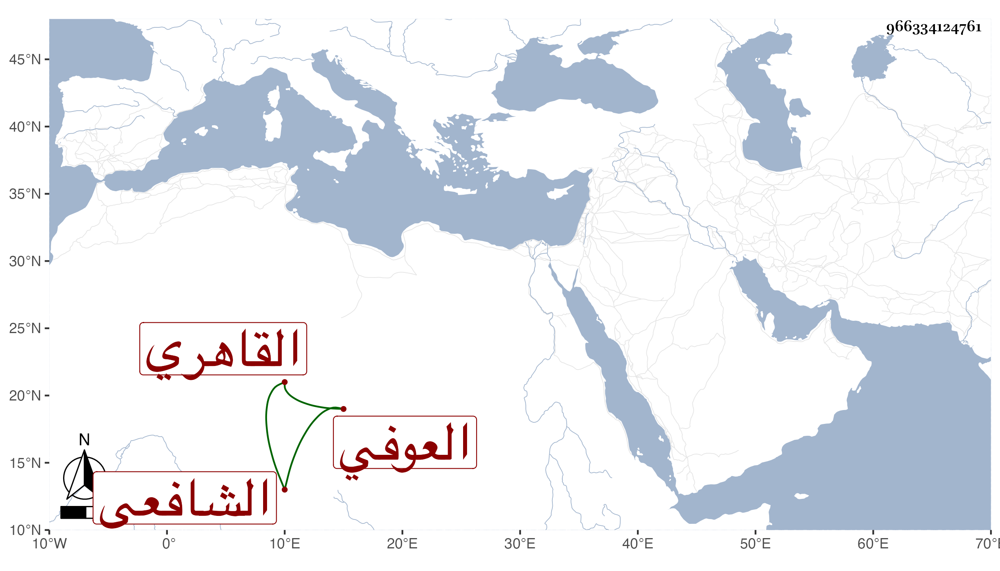

0902Sakhawi.DawLamic.ITO20230111-ara1.EIS1600.966334124761
Biography ID: 966334124761
225
عبد الله بن محمد بن عيسى بن محمد بن جلال الدين الجمال أبو محمد العوفي نسبة فيما بلغني لعبد الرحمن بن عوف أحد العشرة القاهري الشافعي والد أحمد الماضي ويعرف بابن الجلال بالجيم والتخفيف نسبة لجده وبابن الزيتوني أيضا لكون عم جدته كان من منية الزيتون . ولد كما كتبه بخطه في يوم السبت مستهل المحرم سنة خمس وسبعين وسبعمائة وحفظ القرآن والحاوي والتنبيه والمنهاج الأصلي وغيرهما وتفقه في الابتداء بالبدر القويسني . ثم لازم الأبناسي وابن الملقن وكذا أخذه عن البلقيني والصدر الأبشيطي والشمس ابن القطان المصري في آخرين وأخذ العربية عن المحب بن هشام والشهاب الأشموني الحنفي وكثيرا من العلوم العقلية عن قنبر والحديث عن العراقي دراية ورواية وكتب عنه الكثير من أماليه وكذا لازم مجالس البلقيني في الحديث وغيره وتلا بالسبع إفرادا وجمعا على الفخر عثمان المنوفي وبحث عليه في الشاطبية وسمع الحديث على التنوخي وابن أبي المجد والهيثمي والفرسيسي وناصر الدين بن الفرات وآخرين حتى سمع على الشرف بن الكويك ونحوه ، وتقدم في العلوم وأذن له غير واحد من شيوخه بالإفتاء والتدريس كالأبناسي والأبشيطي والبلقيني ووصفه بالشيخ الفقيه الفاضل الأمين وأنه علم أهليته واستحقاقه وكذا أذن له ابن هشام في العربية والفخر في القراءات وناب في القضاء قديما وحديثا وحمدت سيرته في قضائه وتصدر للإقراء والإفادة وربما أفتى وخطب ببعض الجوامع ثم أعرض عن ذلك كله في سنة تسع وثلاثين بل وتجرد عما بيده من الوظائف وانقطع بجامع نائب الكرك ولأجله عمره جوهر الخازندار عمارة حسنة ، وكان عالما فقيها ثقة عدلا في قضائه متواضعا ساكنا وقورا منجمعا عن الناس قانعا باليسير على قانون السلف سريع الإنشاء نظما ونثرا كالمدائح والخطب والمراسلات مذكورا بالولاية والسلوك والتقدم في طريق القوم وصحبه غير واحد من السادات كالشيخ عبد الله الجندي نزيل الحسينية وعمر البسطامي ، مجاب الدعوة ما قصده أحد بسوء فأفلح إلى غير ذلك من الكرامات حتى أني سمعت الشهاب أحمد بن مظفر الماضي يحكي غير مرة وكان ممن كثرت مخالطته له أنه شاهد البحر قد اجتمع له حتى جازه وتخطاه ، وبالجملة فصلاحه مستفيض ، وقد ترجمه شيخنا في أنبائه فقال : نائب الحكم جمال الدين أخذ عن شيخنا الأبناسي وغيره واشتغل كثيرا وتقدم ومهر ونظم الشعر المقبول الجيد وأفاد وناب في الحكم وتصدر وكان قليل الشر كثير السكون والصلاح فاضلا انتهى . وهو من خواص أصحاب الجد للام ولذا اجتمعت به معه ودعا لي بل عرضت عليه بعض محفوظاتي ، ومات في رجب سنة خمس وأربعين ودفن بحوش سعيد السعداء وكان أحد صوفيتها ولم يسمح بالرغبة عنها في جملة وظائفه لأولاده ليكون مندرجا في الدعاء من أهلها ويكون دفنه في تربتها ، قال شيخنا وأظنه قارب السبعين بتقديم السين . رحمه الله وإيانا . ومن نظمه
| ووعدتني وعدا حسبتك صادقا | ومن انتظاري كاد لبي يذهب |
| فلمن رآنا أن يقول مناديا | هذا مسيلمة وهذا أشعب |
وفي معجمي من نظمه غير ذلك رحمه الله وإيانا .
